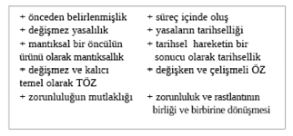
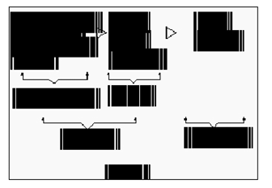
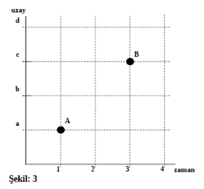
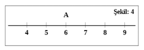
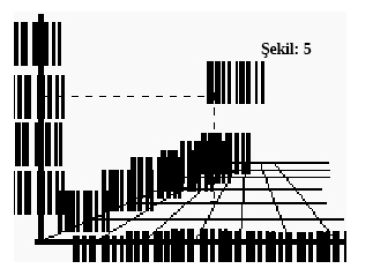

ii- Mantıksalın Tarihseli Kapsaması:
Her yeni nitelik, aşılmış bir sürecin öğelerinin ya da bağıntılarının yoğunlaşmış ve yeni bağıntılarla düzenlenmiş sonucu olarak doğar.
Bu anlamda sonuç, sürecin aşılma noktasını, bir başka sürecin başlangıcı olma özelliği taşıyan bir tamamlanma noktasını temsil eder. Burada, süreçte varolan bağıntılar ve öğeler yalnızca yoğunlaşmış, zenginleşmiş olmakla kalmaz, aynı zamanda birçok bakımdan tasfiyeye de uğramış olurlar.
İster nesnel süreçlerin tamamlanması anlamında kullanalım sonuç terimini, ister bir mantıksal çıkarsamanın yargısı anlamında, bu noktada geçmiş süreçlerin öğeleri ve ilişkileri, yalnızca en temel, özsel ve belirgin halleriyle bulunacaklarıdır. Sonuç’un, süreci “belirtik olarak kapsaması” kavramının anlamı budur.
Bütün maddi varlığın, evrilen bir evrenin öğeleri olduğunu düşünüyoruz. Evrim, devrimci sıçrayış anlarıyla birlikte, maddi dünyanın sürekliliğini karakterize eden bir varoluş tarzı.
Evrim kavramıyla, eski ile yeni arasındaki ilişkinin yok etme ve kaldırmaya konu olmayan özgül bir yanını, birikim süreçleriyle sıçrama momentlerinin süreklilik içinde bağıntılı kalan bir yanını ifade ediyoruz. Böylece, süreklilik içindeki evrenin bu oluş tarzında, aşağı ve basit varoluş biçimlerinden yüksek ve karmaşık varoluş biçimlerine doğru bir ilerlemenin gerçekleştiğini, her ileri aşamanın, bir yanıyla ve özel bir tarzda eski aşamaları kapsadığını kabul ediyoruz. Konuya daha önce kavramların ve kategorilerin hareketlerini incelediğimiz bölümlerde ana çizgileriyle değinmiştik.
Toplumların tarihinde, her yeni kuruluşun, eski ilişkileri aşılmış ve dönüştürülmüş hali içinde kapsadığını söylemekle, bir belli nitel sonucun, kendisini ortaya çıkaran tarihsel sürecin öğelerini ve ilişkilerini kapsadığını anlatmak isteriz. Yukarı aşamalar, aşağı aşamaların bazı özellik ve niteliklerini taşımaya, fakat “tasfiyeye uğramış”, “aşılmış”, bir biçimde taşımaya devam ediyorlar.
Hem bir nesnel sürecin sonucu olmak bakımından, hem de bir tarihselliğin mantıksal olarak sistemleştirilmesi bakımından, ulaşılan her nokta, önceki evrelerin en karakteristik özelliklerini, temel çizgilerini ve bağıntılarını kapsamaktadır.
Bir siyaset tarihçisi, “sürüp giden bir savaşın gerçek nedenleri, ancak barış masasına oturulduğunda anlaşılır” diyor. Barış, savaşın süreçlerinin (tarihselliğin) bir sonucu (mantıksallığı) olarak ele alındığında, burada söylenenle yukarıdaki önermeler arasında bir ilişki kurulabilir. Savaşın nesnel süreçleri içinde hareket eden ve birbirleri üzerinde etkide bulunarak savaşın bir belli biçim almasını, belli bir sonuca adım adım ulaşmasını sağlayan sayısız faktör ve bağıntı, savaş sona erdiğinde, barış masasına oturulduğunda, yalnızca en temel ve belirleyici olanların öne çıkarıldığı, ayıklanıp netleştirildiği bir tartışmanın konusu olacaklardır. Savaşın başlangıcında ve süreçlerinde apaçık rol oynamış gibi göründükleri halde, birçok olay, çatışma ve çelişme, barış tartışmalarında söz konusu bile edilmeyecektir. 1. Dünya Savaşının hiçbir barış antlaşmasında, hiç kimse, Arşidük Ferdinand’ın suikasta kurban gitmesiyle ilgili ne bir talepte bulunmuştur, ne bir hesap sormuştur. Gene kimse, barış antlaşmalarında ulusal nefretlerden, Tanrının iradesinden, kahramanca duygulardan söz etmemiştir. Barışın koşulları, siyasi ve iktisadi çıkarlar çerçevesinde tartışılmış, başlangıçta ve süreçte kendisini “gerçek nedenler” gibi göstermiş olan sayısız olay ve etken, birkaç anlaşma maddesinin ele aldığı temel ve gerçek sorunlar içinde eritilmiştir. Barışın (bu mantıksal sonucun) öğeleri, savaşın (o tarihsel sürecin) öğelerinin arındırılmış, soyutlanmış, sentezlenmiş hali olarak ortaya çıkmıştır. Ayrıntılar, geçici ve ikincil öğeler, temel noktalar içinde bütünleştirilmiş, kalıcı ve temel sorunların cümlesi içinde kapsama alınmışlardır.

Nesnel süreçler, bir dizi düzensizlik, rastlantısallık ve bağıntısızlık görüntüsü veren karmaşık bir akış içinde gerçekleşirler. Mantıksal inşa, bu zengin çeşitlilik yığını içinde, düzenli, zorunlu ve bağıntılı olanı bulmaya, nesnel gerçekliği bu esaslar üzerinde özetlemeye dayanır. Engels bunu, “mantıksallık, tarihsel olanın düzeltilmiş ifadesinden başka bir şey değildir” sözüyle anlatıyor. Demek ki mantıksal inşa, bir belli niteliğin oluşması koşullarını temel belirlenimler açısından anlamlandıracak, nitelik içinde belirgin olarak kapsanmamış öğeleri, genel düzenlilik açısından bir sapma, bir rastlantı olarak görecektir.
Gerçekte her kavram, her kategori, her mantıksal form, nesnellikten bir sapmadır. Yani gerçekliğin içerdiği her şeyi değil, ancak belli bir pratik açısından temel ve özsel olarak seçilmiş ilişkileri kapsar. Diğer yandan her kavram, nesnel gerçekliğin “sapmalarının” düzeltilmesini ve elenmesini de ifade eder. Soyutlama, böylece gerçeklikten bir ayrılış, fakat gerçekliğin “özüne” bir yaklaşış olur.
Bu düşünce V.İ. Lenin tarafından “düşünce somuttan soyuta yükseldikçe hakikate yaklaşır” biçiminde ifade edilmişti. “Doğa yasaları”, bilimsel ve mantıksal kategoriler, yüksek soyutlamalar olarak “varlığın özünü açığa çıkarmak” çabasının ürünüdürler.
Kavram ve kategorilerin bu, “özü açığa çıkaran” içerikleri dolayısıyla, onların ifade ettikleri ilişkilerin de ölümsüz ve kalıcı olduğunu düşünen idealizm, tarihsel sürecin mantıksal olan açısından ele alınmasında, eski dünyayı, kategorilerin inşa edildikleri bugünün dünyası ile özdeşleştirir. Böylece kategorilerde gözlenen kalıcılık, tekrarlanan tarih ve değişmeyen düzen ideolojisi ile tutarlı hale gelir. Bir başka deyişle bu, sonucun olgun yapısından türetilmiş olan kavram ve kategorilerin, başlangıçta ve süreçte aynen geçerli olduğunun kabulüdür. Bu durumda, başlangıcın sonuca göre anlamlandırıldığı, ereksel ya da “yaratıldığı gibi kalmış dünya” tasarımına denk düşen bir tarih yorumu ortaya çıkar. Oysa kavramlar ve kategoriler, sürecin zenginliğini, hareketliliğini ve kendini sürekli olarak yeniden üretişini, bir bütün olarak, soyut, temel, özsel çizgileriyle ve başlangıçta bulunmayan pek çok özelliği genelleştirilmiş haliyle içerirler.
Hegel, “eskilerde henüz bulunmayan, ancak bizce kavranabilen bir gelişimi” onlara yüklememek için, tarihselliğe uygun davranmak gerektiğini belirtmişti. Mantıksal ilerleyişin “kendinde hareketinde” tarihsel ilerlemeyi buluruz; ancak mantıksal hareketin “saf kavramlarını da tarihsel form içinde tanıyıp bulmamız gerekmektedir”, ona göre. Böylece, mantıksalın kapsadığı, fakat başlangıçta ya da sürecin herhangi bir noktasında bulunmayan özelliklerin onlara yüklenmesinden kaçınmış olabileceğiz.
Engels, aynı konuya şu sözleriyle ışık tutuyor:
“Mantıksal, gerçekte yalnızca tarihsel biçimden ve ters rastlantıdan arındırılmış tarihsel tarzdan başka bir şey değildir... (Mantıksal), bizzat tarihin gerçek seyrinin sunduğu yasalar gereğince düzeltilmiş bir yansıma olacaktır.”10
Buradan çıkan yöntem ilkesi şu olmaktadır: Mantıksal, tarihselin süreçlerine uygun olarak inşa edilmeli, elde edilen kategorilerin uygulanmasında, nesnel süreçlerin akışının bu kategorileri hangi ölçüde ve hangi belirtileriyle taşıdıklarına dikkat edilmelidir. Çünkü tarihselle mantıksal arasında, “mantıksalın düzeltilmiş bir tarihsel olması” dolayısıyla, tarihselin ise mantıksalı ancak belli bir tamamlanma durumunda doğurabilecek olan “düzensiz bir süreç” olması dolayısıyla daima bir farklılık bulunacaktır. Demek ki, tarihselle mantıksal arasında, idealist-metafizik sistemlerin iddialarının aksine, bir özdeşlik bulunmamakta, ancak en genel anlamda bir çakışmadan söz edebileceğimiz bir ilişki bulunmaktadır. “En genel anlamda bir çakışma” kavramı, tarihselle mantıksalın “çelişmeli birliği”nin ifadesidir.
Bu birliğin çelişmeli yapısı, yöntem düzeyinde farklı iki yol ortaya çıkarır:
1. Tarihsel inceleme yöntemi: Bu inceleme tarzı, somut bir sürecin, olgunun, olayın ya da nesnenin, gelişmesinin somut şartlarını ve öngereklerini, art arda gelen aşamalarını ve bu aşamaların birinden diğerine geçişin somut içeriğini ortaya koyar. Olgunun tarihsel gelişmesini, kendi somut zenginliği içinde görmeye çalışır.
2. Mantıksal inceleme yöntemi: Tarihsel incelemenin sonuçlarının, veya tarihsel sürecin gelişmiş olgun biçimler altında ayırt edilen niteliksel sonuçlarının, somut biçimlerden, tikel konumlardan, ayrılmasına dayanan işlemler dizisi, mantıksal inceleme yönteminin içeriğini oluşturur. Somut süreçleri, tikel olguları değil, bunların zihinsel olarak yeniden üretilmiş gelişkin yapılarının ilişkilerini inceler.
Bir mantıksal inceleme örneği olarak “Kapital”i ele alarak, iki yöntem arasındaki farklılığı görmeye çalışalım.
V.İ. Lenin “Kapital”i, kapitalizmin tarihinin ve bu tarihi özetleyen kavramların çözümlenmesi olarak tanımlıyor. Bu tanımdan, tarihselle mantıksalın birliğinin, eserin bütünü bakımından önem taşıyan bir yöntem ilkesi olarak değerlendirildiğini anlıyoruz.
“Kapital”, kapitalizmin tarihinin mantıksal yeniden inşasının, bir başka deyişle, “teorik düzeyde genelleştirilmesinin” bir ürünüdür. İngiltere’nin toplumsal kuruluşunu, kendisine inceleme modeli olarak seçmiştir. Gerek bir teorik yapı olarak “Kapital”, gerekse onun inşasına temel olan somut İngiliz sınıf ve mülkiyet ilişkileri, birlikte ve ayrı ayrı, tarihselle mantıksalın özdeş olmayan çakışmasını görmemize yardımcı olacaklar.
Daha önce verdiğimiz şemayı, (bakınız tablo 2) şimdi şu biçimde ele alacağız:
Burada İngiliz Sanayi Kapitalizmi, bütün İngiltere tarihinin süreçlerinin –dünya sanayi ve ticaret tarihinin süreçleri ile birlikte– ortaya çıkardığı bir sonuçtur. Bu tarihsel süreç, aynı zamanda, A. Smith, D. Ricardo gibi kendi gelişme süreçlerinin olgunlaşmamış ya da tamamlanma süreçlerindeki belli aşamalarına denk düşen, olgun olmayan “mantıksal çözümlemelerini” de içermektedir. Bütün bu süreçleri ve sonucunu, tarihsel-somut bir zemin olarak alan “Kapital” ise, hem sürecin kendi içinde adım adım oluşturduğu mantıksal çözümlemeleri (Klasik İngiliz Ekonomi Politiğini) hem, sürecin nesnel gelişme öğelerini, hem de bu gelişmenin nesnel sonucu olan sanayi kapitalizminin en temel, özsel kalıcı belirlenimlerini, kavramlar ve kategoriler düzeyine yükselterek kapsamına alır.
Böylece tarihsel bir somutluk olarak İngiliz Sanayi Kapitalizmi, genel olarak kapitalizm tarihsel gelişmesinin temel özelliklerini, az çok tamamlanmış, olgun ve klasik biçimler altında kendisinde taşıyan bir örnek olarak seçilmiştir.
İngiliz Sanayi Kapitalizmi, belirli bir tarihsel sürecin “mantıksal sonucu” olarak düşünüldüğünde, yalnızca kendi tarihselliğinin süreçlerini ve karakteristiklerini “belirtik” olarak taşımak ve açıklamakla kalmayacak, diğer pek çok ülkenin henüz gelişmekte olan kapitalizmlerinin de, hem varacakları sonu gösterecek, hem de gelişmeleri boyunca alacakları yolun belli başlı aşamalarının en temel özelliklerini açıklamaya elverişli olacaktır. Çünkü, İngiliz Sanayi Kapitalizmi, yalnızca özgül bir somutun tarihselliğinin ürünü olmayı değil, genel olarak kapitalizmin o dönemde ulaştığı en olgun sonuç olması bakımından, bütün kapitalizmlerin “mantıksallığını” temsil etmektedir. Böylece, İngiltere’de XIX. yüzyıl sonlarında varolan ilişkileri, zihinsel olarak yeniden kurulmuş olgun bir örnek olarak ele alıp çözümlemenin sonucunda elde edilen kavram ve kategoriler, “olgun ve az çok tamamlanmış” bir yapının kavram ve kategorileri olarak, görece daha geri tarihsel süreçlerde bulunan ilişkileri de kapsayan bir içeriğe sahip bulunacaklardır. Marx, “Kapital”in yöntemden gelen bu özelliğini Almanca birinci baskıya yazdığı önsözde şöyle anlatıyor:
“Sanayi yönünden daha çok gelişmiş bir ülke, daha az gelişmiş olan ülkeye, ancak kendi geleceğinin bir imgesini gösterir.”
“Ben bu yapıtta, kapitalist üretim tarzını ve bu tarza tekabül eden üretim ve değişim koşullarını inceleyeceğim. Bugüne kadar İngiltere, bunların klasik yurdu olmuştur. Teorik düşüncelerimin gelişmesi içinde İngiltere’nin başlıca örnek olarak gösterilmesinin nedeni işte budur. Alman okur, İngiliz sanayi ve tarım işçisinin durumuna omuz silkmek ister, ya da olumsuz bir biçimde, Almanya’da işlerin bu kadar kötü olmadığı düşüncesiyle kendini avutursa, ona açıkça şunu söylemeliyim: De te fabula narratur. (Bu hikâyede anlatılan sensin.)”
Şöyle düşünülebilir: Mademki Marx, Alman işçisine “kendi hikâyesini” anlatmak istiyordu, o zaman doğrudan doğruya Alman sınıf ve mülkiyet ilişkilerini inceleyerek, sözünü daha doğrudan söyleyemez miydi?
Çağında İngiliz Sanayi Kapitalizmi “Klasik biçimini almış” bir kapitalizm olarak Marx’ın önünde dururken, Alman ya da Fransız veya başka bir kapitalizmin incelemeye alınması, sadece tarihsel bir somutun incelenmesi sonucunu verir, bir başka ülke işçisinin “burada benim hikâyem anlatılıyor” diyemeyeceği bir “özel” hikâye ortaya çıkarırdı. Yukarıdaki ölçüler açısından söyleyecek olursak, bu “tarihsel inceleme yöntemiyle yapılmış” bir inceleme olmanın ötesine geçemezdi.
Bir başka yerde Marx, Aristoteles’in değer konusunda yaptığı çalışmaları değerlendirirken, onun değer ve emek arasındaki ilişkiyi görmemiş olmasını, Aristoteles’in yaşadığı Yunan köleci toplumunun ilişkilerine bağlar. Böyle bir çözümlemenin yapılabilmesi için, “emek ürününün büyük kütlesinin meta biçimini aldığı ve bunun sonucu olarak da insanla insan arasında, metaların sahipleri arasında, metanın egemen ilişki halini aldığı bir toplumsal” zemin gereklidir. Kısaca söyleyecek olursak, bir mantıksal çözümlemenin, ya da bir kategori inşa etmenin ancak gelişmiş bir tarihsel zemin üzerinde mümkün olabileceğini ifade eder. İngiliz Sanayi Kapitalizminin seçilmesinin sebebi budur.
Böylece, bir teorik yapı ile somut pratik ilişkiler arasında bağıntı kurmanın bir yanını görmüş bulunuyoruz. Bir de bu ilişkiye öteki yanından, yani “teoriden pratiğe doğru” ilerleyen yönünden bakmakta yarar var.

Mantıksalla tarihsel arasında ilişki kurulurken, diyalektiği sıradan bir tümdengelim derecesine düşürmemek için bazı temel noktalara dikkat edilmelidir.
Tarihselle mantıksal arasındaki ilişki, tikel ile tümel arasındaki ilişki gibi değildir. Tümelden tikele ilerleyişin formel yapısının ve tikel ile tümel arasındaki indirgemeci ilişkiyi, daha önceki bölümlerde inceledik. Bütün bunların biçimsel mantığa özgü düşünce yolları olduğunu biliyoruz. Diyalektik anlamda “Mantıksal yapı”, tikel tarihsel somutluğun kendisine indirgenebileceği bir tümel öncüller cümlesi değildir.
Tümel kavramlar ya da teorik yapılarla pratik arasındaki ilişki, formel tarzda kurulduğunda, ortaya çıkacak olan sonuç, dışsal bir ilintilendirmenin ötesine geçmeyecek, belki buna bir ölçüde analoji ilavesiyle skolastik tarzda, “kitabın doğrulanması” sonucu elde edilecek, fakat pratiğin aydınlatılması başarılamayacaktır. Diyalektiğin kategorileri, üzerine kuruldukları tarihsel birikimi dolayısıyla ve “ağın bilinmesini mümkün kılan düğüm noktaları” olma özellikleriyle, kendilerinden tümdengelimli çıkarsamalar yapılabileceği kanısını verirler. Biçimsel tanıtlama ya da daha alt kavramların tümdengelimle kendilerinden türetilmeleri için, hiç de herhangi bir metafizik “tümel kavramdan” geri kalmazlar. Ne var ki, sorun kategorilerin böyle bir içeriğe sahip olup olmamaları değildir. Kaçınılması gereken esas nokta, yolun kendisidir. Tümdengelim yolunun, yeni bir şey öğretmediği, zaten bilinen bir sonucu, kurallara uygun olarak açıklamaktan ibaret kaldığı şeklindeki eleştirileri hatırlayalım. Böylece tikel ile tümel, ya da tarihselle mantıksal arasında bulunan bağ, yalnızca kategorinin içeriğinde “örtük” olarak bulunduğu farz edilen bir bağın, örnekleme yoluyla açığa çıkarılmasından başka bir şeyi ifade etmeyecektir.
Tarihselle mantıksal arasındaki ilişkinin bu tarzda anlaşılmasının bir başka olumsuz sonucu, kategori içeriklerinin “geçersiz” olduğu sonucuna ulaşmak olacaktır. Örneğin Marx’ın İngiliz Sanayi Kapitalizmi üzerindeki çalışmalarının sonucu olarak kurduğu iktisadi kategorilerin, tümdengelim için elverişli tümeller olarak anlaşılması sonucunda, ondan herhangi bir ülkenin somut gerçekliğinin türetilebileceğini sanan, fakat bunun mümkün olmayışı karşısında suçu kategorilerin içeriğinde arayan ve revizyon ihtiyacını öne süren pek çok “teorisyen” görülegelmiştir.
Tümdengelimli mantıkta bir olgular sınıfının genelleştirilmiş ifadesi olarak kurulmuş bulunan tümel kavram, kendisine indirgeme yapılabilme imkânını, daha kuruluş sürecinde edinir. Başka bir deyişle, zaten böyle bir işlevi yerine getirsin diye kurulur.
Diyalektiğin kategorileriyse, her şeyden önce tek başlarına birer tümel olma özelliği taşıyamazlar. Tümellik, ya da evrensellik onların bağıntılı bütünlüğündedir. O bütünlük ki, mantığın kendisidir.
Metafizik “evrensellik” kavramı, değişmez bir içeriği ve kavramlar hiyerarşisinde en yüksek yerde bulunmayı ifade eder. Böylece “evrensel”, kendisinden sonraki kavramların türetilebilmesinin yüksek örneğini temsil eder. Diğer kavramlar, bu yüksek örneğe göre ve onun bir alt biçimi olarak doğacaklardır. Buna göre mantık da, bu türetilmeyi mümkün kılan ve düzenleyen kurallardan ibarettir.
Diyalektik mantık ise, organik, canlı, geçişli, hareketli bir bağıntılılığın, süreçlerin ve karşılıklı etkileşmelerin mantığı olarak, herhangi bir biçim’den yoksundur. Elbette bu bir “yoksulluk” değil, aksine doğanın hareketliliğine ve değişkenliğine denk düşen bir hayat zenginliğidir. Bazı diyalektik eleştirmenleri, bu, biçimden bağımsız olmayı, “diyalektiğin mantık sayılamayacağı”nın bir kanıtı olarak gösterirler. Biçimsel indirgemecilikle kıyaslandığında ve ona mantık denildiğinde, doğaldır ki diyalektik başka bir şey olacaktır. Hegel, “idenin hareketini anlamak için ayrıca bir yönteme ihtiyaç olmadığını, çünkü bu hareketin kendisinin yöntem olduğunu, zihnin yapacağı işin onu izlemekten ibaret olduğunu” söyler. Bu açıdan bakıldığında, diyalektikte bir mantıksal formun (ya da teorik yapının) evrenselliği, daima kendisinin aşılmasına açıktır. Ne mutlak bir içeriği vardır, ne de bu içeriğin ne tarzda hareket edeceğini koşullayan bir öncel biçim tanır.
Özetleyecek olursak:
— Diyalektik bir kategori (ya da teori), kendi türünden diğer kategorilerin, biçimsel sıralanışının en yüksek noktasında bulunması dolayısıyla evrensel değildir. Onun evrenselliği, kendisinden önceki kategorilerin bir aşılması, sonrakilerin ise, temeli olmasından, bu anlamda geçmişle geleceğin bir düğüm noktası olmasından kaynaklanır. Bundan ötürü önceki ve sonraki kategorilere, doğrudan doğruya indirgenemez, ya da onlar bu kategoriden araçsızca çıkarsanamazlar. Her iki işlem için de bir yandan diğer bütün bağıntı formlarının çözümlenmesi gerekir, diğer yandan, eğer bir tikele uygulanması söz konusu ise, onun “tarihsel biçim altında tanınması” temel bir önem kazanır.
— Bir diyalektik kategori (ya da teori), kendisinden öncekilerin yalnızca birer olanak olarak taşıdığı içeriğin bir gerçekliğidir: Ve kendisinden sonraki kategorilerin gerçekliği için bir olanaktır. (Önümüzdeki bölümlerde ayrıntılı olarak ele alacağız.) Bu yüzden de, gene tümdengelim yoluyla bir başka gerçekliği vermez. Gerek imkânlarının tanınması, gerekse hangi başka gerçekliğe doğru ilerleyeceği sorunu, diyalektik yöntemle anlaşılabilir.
“Rusya’da Kapitalizmin Gelişmesi” adlı eser, “Kapital”in özgül koşullara uyarlanması olarak tanınır. Bir anlamda, biri “tarihsel inceleme yönteminin”, diğeri ise “mantıksal inceleme yönteminin” olgun örnekleri olan bu iki dev eser arasındaki ilişki, birinden diğerine nasıl geçileceğinin, “mantıksal olan” ve “tarihsel olan” arasındaki bağıntının nasıl olup da “indirgemeciliğe” düşmeden kurulabileceğinin bir okulu gibidir. Gene bunun gibi, “Alman İdeolojisi” ile “Louis Bonaparte’ın 18 Brumaire’ı” kıyaslandığında, birincisi tarihin teorik, genel “Mantıksal” çözümü, diğeri somut ve özel bir tarih kesitinin incelenmesi olarak, ayrılıklarını ve birliklerini, mantıksaldan tarihsele geçişin özelliklerini göstereceklerdir. Böyle bir karşılaştırma, evrenselle tikel arasındaki diyalektik bağıntının, birinden diğerine geçişin diyalektik yolunun ve süreçler bakımından ele alındığında, aralarındaki karşılıklı etkileşme ilişkisinin içeriğinin anlaşılmasına yardım edecektir. Görülecektir ki, mantıksal br yapının kavram ve kategorileri daha aşağı ilişkileri kapsar ve açıklarken, bu daima, kavram ve kategorilerin büründükleri tarihsel form içinde anlamlı olabilmektedir. Hegel, daha önce de andığımız önemli sözünde, mantıksalın içeriğini oluşturan “saf kavramları” tarihsel içinde anlayıp tanımak gerektiğini ve mantıksal ilerleyişin, tarihin ilerleyişini ancak temel duraklar halinde izlenebilir kıldığını söylüyordu.
Yeniden “Kapital”e bakalım:
Mantıksal, kendisini inşa eden süreçleri ve öğeleri “belirtik” olarak kapsarken, kendisinden sonrakileri de “örtük” olarak içerir demiştik. Bu formülasyonun, kategori hareketinin genel niteliğine uygun olduğunu hatırlayalım.
Buna göre, İngiliz Sanayi Kapitalizminin teorisi, bir yandan geçmiş üretim şekillerinin “belirtik” bir açıklamasını verirken, diğer yandan da, geleceğin sosyalist toplumsal kuruluşunun belli çizgilerini, öğelerini ve niteliklerini kendisinden çıkarsayabileceğimiz bir içerik taşımaktadır. Teorinin bu özelliğinin, nesnenin kendisinde de bulunduğunu görürüz. Yani, Sanayi Kapitalizmi, hem geçmiş üretim ilişkilerinin öğelerinin ve süreçlerinin aşılmış bir devamı olarak onları, arınmış, yoğunlaşmış ya da tasfiyeye uğramış halleri ile kapsarken, gelecek toplumsal aşamanın öğelerini de kendi içinde taşımaktadır.
“Kapital”in hazırlık çalışmaları sırasında yazdığı ve daha önce sözünü ettiğimiz “Ekonomi Politiğin Yöntemi” başlıklı yazısında Marx, burjuva toplumu, tarihin en gelişmiş ve çok yönlü üretim örgütlenmesi olarak tanımlamakta ve bundan şu sonuçları çıkarmaktadır: Burjuva toplumun yapısının tanınmasına olanak veren kategoriler, tüm ortadan kaybolmuş üretim yapı ve ilişkilerinin kavranmasına imkân verir. Çünkü bu toplum, ortadan kaybolmuş eski üretim ilişkilerinin öğe ve yıkıntılarından inşa edilmiştir ve bunların bir kısmını kalıntılar halinde taşımaya devam etmektedir. Öte yandan gene bu toplum, eski üretim ilişkilerinde ayrıntılar halinde kendisini göstermiş fakat gelişmesini tamamlamamış kimi öğe ve yapıları da olgun ve gelişmiş halleri içinde kendisinde toplamıştır.
Bununla birlikte herhangi bir kategori (burada burjuva toplum), kendisinden öncekileri açıklayabilme gücünü, ancak kendisinin aşılmak üzere olduğu bir zamanda, yani gelişmesinin az çok tamamlandığı bir olgunluk anında gösterebilir: “burjuva ekonomisi, ... feodal, antik doğa ekonomilerini bir ölçüde anlamayı, ancak burjuva toplum kendi özeleştirisine bir kez başladıktan sonra başarabilmiştir.”
Sözünü ettiğimiz yazısında Marx, mantıksal inceleme yönteminin şu özelliğine dikkat çekiyor:
“Ekonomik kategorileri, tarihte belirleyici oldukları sırayla birbirini izlemeye terk etmek... yanlıştır. Gerçekte sırayı belirleyen, bunların burjuva toplum içinde birbirleriyle olan ilişkileridir. Ve bu da, doğal sıralama gibi görünen, ya da tarihsel gelişime tekabül eden dizinin tam tersidir.
“Toprak rantı sermaye bilinmeden anlaşılamazdı. Ama sermaye, toprak rantı bilinmeden pekâlâ anlaşılabilir...”11
Aynı düşüncesini Marx, daha sonra “Kapital”de şöyle ifade ediyor:
“İnsanın toplumsal yaşam biçimleri üzerindeki düşünme ve incelemeleri, bunların fiili tarihsel gelişmelerine tamamen ters düşen bir yol izler. İşe post fectum (her şey olup bittikten sonra) önünde hazır bulunan gelişme süreçlerinin sonuçları ile başlar.”
Demek oluyor ki, mantıksal inceleme yöntemi, tarihte izlenen aşamaları izlemeyecek, basitten karmaşığa doğru gelişen yolun “tam tersi” bir yönü, mantıksal bütünlük içinde kategorilerin birbirleriyle olan ilişkilerinin yönünü izleyecektir.
Tarihsel sürecin doğru olarak anlaşılması için yöntem, bu sürecin bütün ayrıntılarını ve zigzaklarını tekrar etmek zorunda değildir. Aksine, yukarıda değindiğimiz gibi, mantıksal yol, tarihsel sürecin “düzeltilmiş” bir yansısını kurmaya çalışacaktır. Mantıksal yöntem, mevcut ilişkileri ifade eden kategorileri ve onların hiyerarşisini tarihsel sürecin gösterdiği biçimde ele alıp uygulamayacak, fakat en olgun ve kapsam bakımından en zengin kategoriyi, diğer kategorileri de açıklayan bir anahtar olarak ele alacaktır.
Örneğin ticaret sermayesi, tarihsel olarak sanayi sermayesinden, o da finans sermayesinden önce gelmektedir. Sermayenin yapısını inceleyen araştırmacının izleyeceği yol, “son kategoriden” başlamak olacaktır. Çünkü finans kapital, diğer sermaye biçimlerinin hepsinden sonra doğmuş olmakla birlikte, modern burjuva kapitalist (emperyalist) ilişkiler içinde, diğerlerini kapsayan ve hareketlerini yönlendiren bir “hiyerarşik yer” tutmaktadır. Diğer kategorilerle olan ilişkisi ve onların içerikleri üzerindeki açıklayıcılığı, kendisinden yola çıkılarak tanımlanacak bir bütünlük oluşturmaktadır. Aynı işlevi, tarihsel olarak eski aşamalara denk düşen, dar kapsamlı ve gelişmemiş ilişkilerin ifadesi olan “ticari sermaye” kategorisi yerine getiremezdi. Buna uygun olarak Marx, eserinin gelişmesinde, tarihsel olarak çok sonraları ortaya çıkmış olmasına karşılık, sanayi sermayesinin incelenmesini diğer sermaye biçimlerinden önce ele almış, bunu “mantıksal bir çıkış noktası” olarak kullanmıştır.
Bir kural olarak şunu söyleyebiliriz: Sosyo-tarihsel araştırmanın öncülleri, tarihsel gelişmenin sonuçlarındadır.
Bu noktada, mantıksal inşa ile tarihsel süreçler arasındaki bir ilişkiyi yeniden vurgulamamız gerekiyor: Kategoriler inşa etmek, mantıksal bir yapı kurmak, “kafadan bağıntılar uydurmak” demek değildir; “bu bağıntıları nesnel ilişkilerin dokusu içinde bulmak” (Engels) gerekmektedir.
Örneğin Marx, eserinde değer, emek, para, sermaye vs. gibi kategorileri, bir yandan en olgun ve gelişmiş üretim biçiminin kategorileri olarak ele alıp incelerken, bunların çözümlenmesine tarihsel olarak da eğilir. Yani Engels’in dediği gibi, onları “nesnel ilişkilerin dokusu içinde” bulur, her birinin oluşmasını, kökenlerini ve gelişmelerini inceleyerek, tarihselle mantıksalın iç içeliği, fakat çelişmeli birliği ilkesini uygular. Bu eserde kapitalizmin mantıksal çözümlenmesi, belirli bir hiyerarşi içinde sıralanmış kategorilerin oluşturduğu bir sistemin çözümlenmesi olarak karşımıza çıkar. Ancak Marx, bununla kalmaz, bu kategoriler tarafından temsil edilen ekonomik şekillerin köken ve gelişmelerini de tarihsel süreçler içinde inceler. Bunu yaparken, her çağda, eski üretim ilişkilerinin öğelerini değişmiş, dönüşmüş halleri içinde kendinde taşıyan bir “egemen üretim biçimi”nin bulunduğu düşüncesinden hareket eder. Böylece tarihsel sürecin gelinen aşaması, sürecin bütününün az çok tamamlanmış bir sonucu olarak ele alınır. Eski ilişkilerin aşılmış bütünlüğünü temsil eden bu “son aşama”nın çözümlenmesinden elde edilen kategoriler, burada eski ilişkiler içindeki tayin edici rolleriyle değil, mevcut modern ilişkiler içindeki bağıntılarının ortaya koyduğu etkinlikleri bakımından ele alınırlar.
Bu bölümde, “tarihselle mantıksalın birliği” kategorisini, ekonomi politiğin eleştirisi alanında kullanılışı bakımından örneklemekle yetiniyoruz. Bununla birlikte bu kategorinin, bütün toplumsal ilişkilerin çözümlenmesi için ilkesel bir yöntem temeli sağladığı unutulmamalıdır. Siyasi, askeri, kültürel vb. herhangi bir alanda karşılaşılan durumların çözümlenmesinde, her şeyden önce durumun içerdiği öğeleri, öğeler arasındaki bağıntıları ve bağıntıların düğüm noktalarını bulmamız, ve bütün bunları tarihsel süreçler içinde yeniden anlamlı kılmamız gerektiği bize bu kategorinin içeriği tarafından öğretiliyor.
Mantıksal yapı, tarihselin çok öğeli, karmaşık, zigzaklı süreçlerinin hangi kıstaslar açısından, hangi eksene oturtularak ele alınacağına yol gösterecektir. Nesnel tarihsel süreçlerin kendilerini ortaya koyuş tarzını, somut-verili durumda incelemek, ve bunları kategoriler düzeyinde ifade etmek, tarihselin geçici, tesadüfi, ikincil yanlarının arındırıldığı, düzeltildiği bütünsel bir sistem kurulmasına imkân verecektir.
Bununla birlikte, kategorilerle, nesnel tarihsel süreçler arasındaki ilişki, rastgele seçilmiş herhangi bir tarih anının çözümlenmesine, geçici somutun göreli yapısının kavramlaştırılmasına dayandırılamaz. Mantıksal yapı bu ve benzeri pek çok anının birbirleriyle ilişkisinin uzun ve bağıntılı süreçler içinde ortaya çıktığı, gözlenebilir hale geldiği bir bütünlüğe dayanmalıdır.
Engels, “diyalektik, tarihi uzunca bir süre beklemişti” diyordu. Bu söz, diyalektiğin bir tarihsel birikimin yeterince olgunlaşmasının sonucu olarak doğabildiğini vurguluyor. Yüksek bir mantıksal yapı olarak diyalektik, insanın sosyal ve zihinsel örgütlenmesinin daha önceki aşamalarında değil de, tarihsel olarak bir çözülüş ve yeniden kuruluş çağının başladığı bir zamanda ortaya çıkabilmiştir. Böylece bizzat kendisinin koyduğu bir kural gereğince bir aşma noktasının, eski “kategorilerin” gerçekten eskidiğinin görülebilir hale gelmesinin ürünü olmuştur.
“Kural olarak en genel soyutlamalar, ancak mümkün olan en zengin gelişmenin ortasında, bir şeyin birçok şeyde, her şeyde ortak olarak belirdiği durumlarda ortaya çıkarlar.” (Marx)
2.KATEGORİLERİN BAĞINTILILIĞININ İKİ SİSTEMİ
“Tarihselle mantıksalın birliği”, kategorilerin yansıttıkları alanla olan bağıntısını ve etkileşmesini inceleyen bir kategoriydi. Bu kısımda, kategorilerin kendi aralarındaki bağıntılılığının iki sistemini ele alacağız.
Kategorilerin, iki bakımdan, “bağımsız” varlıklarının olmadığını biliyoruz. Birincisi, kategoriler, nesnel ilişkileri ve hareketleri yansıtırlar, dolayısıyla maddi hayatın ilişkilerine bağlıdırlar. İkincisi, kategorilerin insan bilincinden bağımsız bir nesnel gerçeklikleri yoktur, dolayısıyla, zihnin yeniden üretim süreçlerinin bir ürünü olarak, özneye bağlıdırlar.
Bu iki bağımlılık ilişkisi, kategorilerin sisteminde önemli bir özellik ortaya çıkarır.
Bütün kategorilerin kendi aralarındaki bağıntıların tümü, bir sistem oluşturur. Genel olarak her sistem, farklı işlev ve yapıdaki öğelerin, bir ilkeye, bir yasaya ya da pratik bir belirlenime göre düzenlenmiş bağıntılarından oluşur. Farklı parçalardan oluşan bir makine, parçalarının bir sistemidir. Farklı işlevler yüklenmiş ancak belli bir üretim amacı doğrultusunda bağlantılanmış değişik makinelerin bütünlüğü ise, fabrika sistemini meydana getirir. Farklı mal ve hizmetler üreten birimlerin bir araya gelmesiyle oluşmuş entegre tesislerde ise, fabrika bir sistem nesnesi haline gelir. Bu örnekte, bir makine parçasından entegre tesise kadar, gittikçe karmaşıklaşan ve zenginleşen bir sistemler hiyerarşisi ve sonunda da bir sistemler sisteminin doğuşunu görüyoruz.
Engels, tüm doğayı, çeşitli bağıntıların bir sistem biçimi olarak tanımlamıştı. Bu anlamda doğa da, değişik özgül bağlantı sistemlerinin bir sistemidir.
Şu halde, gerek nesnel ilişkilerin gerçekliğinde gözlenebildiği kadarıyla, gerekse bu ilişkileri kavrayan insan zihninin bu ilişkileri mantıksal yeniden üretişinde, iç içe geçmiş, değişik düzeylerden oluşan farklı sistem biçimleri bulunmaktadır.
Kategorilerin, yansıttıkları ve kurdukları pratik alanların bağıntılarının bir sistemi olduğu söylendiğinde, bunun bir yandan nesnel gerçekliğin, diğer yandan da düşüncenin yasalarıyla belirlenmiş bir sistem olduğu ifade edilmiş olur. Kategori sistemlerinin önemli özelliği dediğimiz şey, işte bu keyfe bağlı olmayış, öznel tercihlere bağlı olmayış özelliğidir. Daha açık bir deyişle, kategorilerin ne tarzda ve hangi kıstaslarla bağlantılanarak bir sistem oluşturdukları ya da oluşturacakları problemi, nesnel gerçekliğin ve düşüncenin ilişkilerine göre çözümlenecektir.
Yukarıdaki örnek üzerinde yeniden düşünürsek, genel sistemin kurucu öğelerinden biri olan en küçük parçanın, yalnızca sistemi meydana getiren bir nesne olmakla kalmadığını, aynı şekilde, meydana gelmesine katıldığı bütünsel sistemle bağıntılı olarak anlam ve işlev kazandığını görürüz. Diğer yandan, sistem nesnelerinin (sistemi kuran ve sistem açısından anlam kazanan nesnelerin) her birinin kendi arasında, değişik düzeylerde ve değişik içeriklerde özgül sistemler oluşturduklarını da aynı örnek üzerinde görebiliriz. Bütün evreni bir sistem biçimi olarak düşündüğümüzde, tekil varlıkların da sonsuzca geniş ve çok öğeli bir bütünlük içinde karşılıklı olarak birbirlerini etkileyen, uzak yakın, dolaylı dolaysız, sayısız bağla birbirine bağlanmış bir “sistem nesneleri” topluluğu olarak tasarlamış oluruz. Evrensel bağımlılık ilişkisini, böylece tasarlamakla birlikte, pratik faaliyeti içinde insan, eylemini daima belli bir ilgi ve ihtiyaç çerçevesi ile belirlediği özel bağımlılık ilişkileri içinde gerçekleştirir. Bilim, sanat, siyaset, teknoloji, askerlik vb. böyle özgül sistemler olarak karşımıza çıkarlar. Üretimin çeşitli dallarını da böyle adlandırabiliriz: Tarım, ticaret, sanayi vs. gene her biri “özgül evrenler”dir; ayırt edilmiş, kendi içlerinde bütünlükleri olan sistemler.
Bütün sistemler, her ne kadar özgül içerikleri ve iç bağıntılarıyla birbirinden ayrılsa da, gerçekte her birinin diğeriyle içten bağıntılı olduğu ve aralarında karşılıklı ilişki ve etkileşme bulunduğu açıktır. Bunları bütünüyle ayrı alanlar olarak ele alabilmek ancak soyutlamalarla mümkündür. Her bir özgül alan, genel toplumsal ilişkiler sisteminin bir öğesi olarak anlamlıdır ve aralarında bu genel sistemle belirlenmiş bağıntıları vardır.
Böylece bağıntılılığın, farklı fakat iç içe geçmiş iki düzeyinin bulunduğunu, bu iki düzeyin bütünlüğünün ise “sistem” kavramını oluşturduğunu görüyoruz.
Birinci sistem, kavram ve kategorilerin işlev ve içeriklerini düzenleyen bir dış belirleyiciye dayanır. Bu sisteme, “kategorilerin koordinasyon sistemi” diyoruz.
İkinci sistem, kategorilerin birbirleri tarafından belirlenmesinin, karşılıklı ilişkilerinin, birbirlerine geçiş ve dönüşmelerinin oluşturduğu sistemdir; buna da “kategorilerin bağımlılık sistemi” diyoruz.
Bağıntılılığın bu farklı düzeylerini birbirlerini dıştalayacak tarzda mutlaklaştırmak veya sistem bütünlüğünü bu düzeylerden herhangi birine indirgemek, metafiziğin özelliğidir.
Kategorilerin dış sistemle olan koordine bağıntısını, her bir kategorinin bir diğeriyle olan bağımlılık ilişkisi ile iç içe düşünmek gerekir.
Ayrıca, bu sistemlerden herhangi birini diğerine öncül kabul ederek yapılacak çözümlemeler de, sistemin mekanikleştirilmesine yol açar.
Gene, sistemlerin öğelerinden ve onların ilişkilerinden bağımsız olarak varolabilecekleri, ya da herhangi bir varoluş biçiminin herhangi bir sistemden bağımsız olabileceği de düşünülemez.
i.Kategorilerin Koordinasyon Sistemi:
Descartes’ı hatırlayalım. Onun düşüncesine göre, “uzam”, maddenin temel niteliği idi. Bu temel nitelik, uzay ve zaman gibi iki temel eksenin varlığı ile tanımlanıyordu. Örneğin, 3. şekildeki A varlığı, “1” zamanında ve “a” uzay nok-tasında bulunmaktadır. “B” varlığı ise, “3” zamanında, “c” noktasındadır. Böylece “A” ve “B” varlıkları, kendi hareketlerinden etkilenmeyen bir dış sisteme göre, bir başka deyişle, “değişmelerinin, içinde gerçekleştiği bir değişmeyen”e göre, tanımlanmışlardır. Bu mekanik yoruma göre, koordine öğeler olan A ve B varlıklarının hareketi ne olursa olsun, kendileri ne kadar değişirse değişsin, bağlı oldukları dış sistem, koordinat sistemi, “tanımlayıcı karakteristik” olarak değişmeden kalacaktır. Bir an için A ve B ile birlikte, fakat onlardan farklı bir biçimde, eksenlerin de hareket ettiklerini düşünürsek, öğelerin koordinatları belirsiz kalacak ve “tanımlanamaz” hale geleceklerdir.
Modern bilim, XX. yüzyılda, madde, zaman, uzay, hareket kavramlarına yeni bir içerik getirdi ve kategorilerin birbirlerine bağımlılığı tezini ileri sürdü. Hareket halindeki maddenin, zaman ve uzayının da bu harekete bağlı olduğu, her birindeki değişmelerin diğer bütün öğelerin hareket ve içeriğini etkilediği kabul edildi. Bu, modern diyalektiğin felsefi öngörülerine de uygundu. Bütünlük ve bağıntılılık açısından bakıldığı zaman, maddenin varlığı dışında bir mutlak uzay-zaman bulunmadığı, maddesiz hareket ya da hareketsiz madde kavramlarının içeriksiz kalacağı sonucuna ulaşırız.
Bu kategoriler sisteminin ve kategoriler hareketinin bir özelliği olarak, çok daha önceleri diyalektik tarafından ileri sürülmüş bulunan, bir kategorinin hareketinin sistemiyle bir bütün oluşturduğu şeklindeki mantıksal kuralın fizik dünyada kanıtlanmasıdır. Her kategori, ancak bağımlı olduğu diğer bütün kategoriler tarafından belirlenmiş bir içerik taşır; bunun gibi o da diğerlerini belirler. Genel bağıntılılık kuramının en genel ve soyut ifadesidir bu.
Mekanik anlamda hareket, bir yerden diğer bir yere geçmeden, basit yer değiştirmeden ibarettir. Diyalektik ise hareketi, “genel olarak değişme” diye tanımlar. Bu, mekanik yer değiştirmeyi de kapsamakla beraber, ondan daha geniş bir içeriğe sahiptir ve örneğin, içinde bulunduğu yer hiç değişmediği halde, bir nicelikten başka bir niceliğe bir nitelikten diğerine geçişinde maddenin hareket etmekte olduğu anlayışına dayanır. Bir kavramdan başka bir kavrama geçen düşünce, evrilen doğa, gene birer hareket biçimi gösterirler. Diyalektiğin koyduğu bu tanım, hareketin, göreli-bağımlı karakterini açıkça vurgulamaktadır. Mekanikte yalnızca, “bir yere göre başka bir yerde bulunmak” anlamıyla sınırlanan hareket kavramı, burada çok daha geniş bir kapsama ulaşarak, “bir başkaya geçme” anlamını kazanmıştır. Engels, bir harekette yer değiştirme ne kadar küçükse, hareketin niteliğinin o kadar yüksek olacağını yazıyor. Kategori hareketi, ya da düşüncenin kendi iç hareketi, bu bakımdan hareketin en yüksek biçimi olarak tanımlanır. Ancak, hareketin alt ve üst biçimlerinin ortak niteliği, yani “bir başkaya geçme”, geçerli kalır. Burada “başka” teriminin görelilik ve bağımlılık niteliğine işaret ettiği görülebilir. “Başka”, yer, zaman, nicelik, nitelik, karşıtlık vs. arasındaki bir değişmeyi, bir durumdan bir diğerine geçmiş olmayı, oluş içinde bulunmayı ve eski duruma göre yeni bir durumda bulunmayı ifade ediyor. Hangi terimle anlatılırsa anlatılsın eski ile yeni arasındaki ilişkinin, yani “başkaya geçişin” kıstası, bağımlı-göreli “oluş”tur. Bu durumda da hareketi veya değişmeyi ölçebilmenin koşulu, varlığı kendi varlığı dışında bir varlıkla, yani “bir başka” ile bağıntısı içinde, Hegel’in deyişi ile, “özdeşliğinin yitişi ile” tanımlayabilmek oluyor.
Bomboş uzayda bir nokta olduğumuzu varsayalım: Bizden başka hiçbir şey yoksa, kendimizi, yer ya da zaman bakımından, nicelik, nitelik ya da başka kavramlar bakımından ifade edebileceğimiz, kendimizi bağımlı kılabileceğimiz hiçbir şey yoksa, hareketimiz tanımsız kalacaktır.
Gene bir nokta olduğumuzu, fakat bu kez, bir çizgi üzerinde hareket ettiğimizi varsayalım. Bu durumda hareketimizin yerini ve yönünü çizginin noktalarına göre, bu noktalarla bağıntımız içinde tanımlayabiliriz. Şu anda çizginin “6” noktasındayız. “7”ye doğru ilerliyoruz, veya “5”e doğru geriliyoruz diyebiliriz (bk: Şekil 4)
Bu, “bir şeye göre varolmak” imkânını bize veren şey, bizim dışımızda bir başka şeyin, çeşitli noktalardan oluşan bir çizginin varlığıdır. Aslında çizginin varlığı da, bizim gibi başka noktaların bulunması ve hareket etmesi dolayısıyladır. Şekilde olduğu gibi, çizgi metrik ölçülerle işaretlenmişse, çizgi üzerindeki yerimizi tek bir sayı ile anlatabiliriz. Bu sayı, bizim çizgi üzerindeki koordinatımızı verir. Tek bir belirlenimle tanımlanabildiğimiz bu durumda biz de “tek boyutlu bir süreklilik” ifade ederiz. Demek ki varlığımızı tanımlamak için yeterli olan bu sayı (ya da başka tek bir belirlenim), bizim boyutumuzu verir.
Bu kez, boş uzayda her nasılsa varolan bir “düzlem” üzerinde bulunduğumuzu düşünelim; artık koordinatımızı belirtmek için tek bir sayı anlamlı olmayacaktır. Düzlemin sınırlarına göre, bulunduğumuz alanın özelliklerine uygun olarak tanımlayabilmeye yetecek sayıda belirlenim gerekecektir şimdi. Düzlemin sınırları, onu “iki boyutlu bir süreklilik” olarak belirler. Bir çizgi üzerindeki yerimizi belirlemeye yeten belirlenim sayısı, düzlem için eksik kalacaktır. Bir düzlemin boyutları, iki sayı ile tanımlanır. Bu durumda şekil 3’te olduğu gibi, konumumuz, iki sayı ile belirtilecektir. Biz de “iki boyutlu bir varlık” olarak tanımımızı bulmuş olacağız.
Şimdi düzlemin üzerinde uçtuğumuzu varsayalım. Burada da, artık düzlemin boyutlarıyla sınırlı bir tanım, varlığımızı ve hareketimizi belirtmeye yetmeyecektir. Düzlem üzerinde nerede bulunduğumuzu belirten iki sayıdan başka, bir de ne kadar yüksekte olduğumuzu bildiren bir yeni belirlenim kullanılmalıdır. Böylece boyut sayımız üçe çıkacak ve biz “üç boyutlu bir süreklilik” olarak tanımlanacağız. (Bkz. Şekil: 5)

Modern fizik, zamanın da maddenin bir boyutu olduğunu kabul ettikten sonra, madde yalnızca uzay koordinatları ile değil, buna eklenen zaman koordinatlarıyla da tanımlanır olmuştur. Üç boyut, yalnızca noktanın uzayda bulunduğu yeri göstermekte, fakat o boyutlarla birlikte hangi zamanda bulunulduğu konusunda bir bilgi vermemektedir. Zaman boyutu bildirilmediği sürece, hareket halindeki noktanın tanımlanmasında hâlâ bir eksiklik bulunacaktır. Hareket halindeki madde, diğer belirlenimleri gibi, bir de zamana sahiptir ve zaman, varoluşun diğer belirlenimleriyle bağıntılıdır. Varlığı “bağıntılarının bütünlüğü”, somutluğu da “çok sayıda belirlenimin bir noktada kesişmesi” olarak tanımladığımızda, zaman özgül önemiyle, varoluşun tanımında tuttuğu özel yerle önümüze gelecektir.
Marx, insanın özünün, toplumsal ilişkilerinin toplamı olduğunu söylemişti. Feuerbach, “kulübede yaşayan bir insan, kulübedeki gibi, sarayda yaşayan bir insan saraydaki gibi düşünür” diyordu. Her iki tanımda da bir belli varoluş, kendine özgü bağıntılar içinde yorumlanıp tanımlanmıştır. Feuerbach, düşüncelerle hayat biçimleri arasında tek boyutlu bir ilişki kuruyor. Marx ise, “toplumsal ilişkilerin toplamı” kavramıyla, insanın özünü çok boyutlu bir koordinat sistemi içinde ele alıyor, özel türde bir bağıntılar bütünlüğü olarak tanımlıyor. Feuerbach’ın tanımındaki donmuşluk, Marx’ın tanımındaki hareketlilik ve canlılık karşısında, kuru bir mekanizm olarak kalıyor. Böylece Marx, değişen toplumsal ilişkilere bağlı olarak değişecek bir öz kavramı ileri sürmüş oluyor. Öz’ü belirleyen, tanımlanmasını mümkün kılan bağıntılar değiştikçe, öz de değişmektedir. “insanın ölümsüz ve evrensel özü” kavramı, böylece hareketli, değişken bir içerik taşıyan “toplumsal öz” kavramına yerini bırakıyor.
Buradan konumuzla ilgili olarak şu sonuçları çıkarabiliriz:
Belli bir kategorinin varoluşunu mümkün kılan bağıntılar, varoluşun değişik aşamalarında, özgül bütünlükler göstermektedirler. Bu diğer açıdan şöyle de söylenebilir: bir kategorinin varoluşunu mümkün kılan bağıntıların değişik özgül ilişkiler içinde düzenlenişine, varoluşun değişen aşamaları karşılık düşer.
Bağıntıların herhangi birinin değişmesi, diğerlerinin de değişmesine yol açar. Buna ilişkin genel kuralı şöyle özetleyebiliriz: Kategorilerin hareketi, diğer bütün belirlenimleriyle ve belirlenimlerin birbirleriyle olan bağıntısından doğmaktadır ve hepsi birbiriyle karşılıklı etkileşme içindedir. ilişkilerin değişmesi hareketi doğurmakta, ya hareketi boyunca bağıntılı olduğu kategoriler ya da bir belli kategori ile olan ilişkisi değişmektedir.
Demek ki, mekanik koordinasyon sisteminden farklı olarak, kategorilerin diyalektik koordinasyon sistemlerinde, yalnızca öğelerin değil, sistemlerin de hareketi söz konusudur ve değişen dış sisteme bağlı olarak, öğelerin içerikleri ve birbirleriyle olan bağıntıları da değişmektedir.
Kategorilerin koordinasyon sistemini, önce, bir yapının öğelerinin belli bir karakteristiğe göre, bir dış belirleyene göre çözümlenmelerinin oluşturduğu sistem olarak tanımlıyoruz. Diğer yandan belli bir alanı ve ilişkileri ifade eden değişik kategorilerin belli bir kurala, bir ilkeye göre bağıntılı kılınmaları da bir koordinasyon sistemi doğurur. İlkinde analitik, ikincisinde sentetik süreçlerin temel olduğu işlemler dizisi söz konusudur.
Kategorilerin koordinasyon sisteminin bu iki yönü, kategorilerin genel bağıntılılık sisteminin birbiri içinden akan iki yönü olarak düşünülmelidir.

Bazı örnekler üzerinde, koordinasyon sistemlerini açıklamaya çalışalım.
Biyolojide, canlı türleriyle yaşadıkları ortam arasında sıkı bir ilişki bulunduğu gösterilir. Bir bütün olarak iklim, coğrafya, bitki ve hayvan örtüsü ile canlının anatomik, fizyolojik, içgüdüsel vs. özellikleri birbirine bağlıdır. Fiziksel-doğal çevre ile canlı türünün özellikleri arasındaki bu bağıntılılık, bir koordinasyon ilişkisi olarak yorumlanabilir. Bu anlamda, belli bir çevreden ayrılan canlının “koordinatlarının, değişmiş olması” onun varlık tanımını değiştirir; daha sade bir deyimle, onun çoğunlukla ölümüne yol açar.
Askerlikte, çeşitli kuvvetlerin ve birliklerin tek bir komuta merkezine bağlanmış olması ve hareketlerinin birleşik bir kurmay tarafından yönetilmesi, bir koordinasyon sistemi doğurur. Böylece birliklerin kendilerine özgü, bağımsız amaç ve hedefler gözetmesi ya da diğer birlik veya kuvvetlerle kendi seçecekleri biçimde bağıntılar kurmaları söz konusu olamaz. Her birlik ve kuvvetin (bir anlamda her kategorinin) hareketi ve işlevi, “bir dış sistemin” (birleşik kurmayın) ihtiyaç, amaç ve hedeflerine göre düzenlenmiş, her öğe bir sistem nesnesi haline gelmiştir. Örneğin bir çıkarma hareketinde hava deniz, kara kuvvetleri arasında, öncü paraşütçülerle mekanize birlikler arasında, silahların ve personelin değişik uzmanlıkları arasında vb. önceden belirlenmiş bir stratejiye, taktiğe göre düzenlenmiş özgül türden bağıntılar gereklidir. Askerî kategoriler arasındaki bu özel bağıntılar, hedef ve amaç değiştikçe, ya da hedef ve amaç aynı kalarak taktik ve strateji değiştikçe değişecek, her biri değişik bağıntılarla donatılacak, değişik işlevlerle yüklenecektir. Bir çıkarma için düzenlenmiş bağıntılar, kara kuşatma ya da imha harekâtları için geçerli olmayacaktır. Yeni amaç ve hedefler, yeni taktik ve stratejiler, kuvvetler, birlikler ve silahlar için yeni koordinat sistemleri demektir. Değişen her sistemde öğeler, yeni bağıntılar, yeni tanımlar kazanırlar.

Bir haber alma örgütü, bağlı olduğu merkezi organın kendi hareket tarzını tayin etmek için ihtiyaç duyduğu başlıca verileri toplamakla görevlidir. Diğer devletler ya da kurumlar hakkında, iktisadi, siyasi, sosyal, kültürel, askeri vb. alanlarda mümkün olan en küçük ayrıntılar da dahil olmak üzere, bir süreklilik içinde bilgi toplamak, istihbaratın görevidir. Bu çok çeşitli ve farklı alanların dağınık bilgisi, merkezi organ tarafından, temel hedef ve ihtiyaçlar açısından özel bir sistemleştirilmeye tabi tutulacaktır. Örneğin merkezi organ, karşı taraf üzerinde iktisadi içerikli etkiler elde etmek istiyorsa, askeri, sınai, sosyal vs. alanlardan toplanan bilgiler, bu belirlenmiş amaç tarafından oluşturulan bir “koordinasyon sistemi”nin öğeleri olarak işlev kazanacaklardır. Sistemi oluşturan eksen kategoriler değiştikçe, yani elde edilmek istenen etkinin yapısı değiştikçe, burada bağlanan her bir kategorinin de içeriği, anlamı, işlevi değişecektir. Değişiklik bununla da kalmayacak, aynı zamanda, değişen sistemle birlikte değişen kategorilerin birbirleriyle ilişkisi de değişecektir.
Belli bir alanda politika üretmek, bir anlamda, varolan politik koordinat sistemine karşı yeni bir koordinat sistemi oluşturmak demektir. Karşıt güçler için aynı alanda mücadele ediyor olmanın bir yanını, mücadele alanının öğelerini, kendi koordinat sistemlerinin öğesi haline getirme mücadelesi oluşturur. Sınıf mücadelesinin karşıt güçleri, kendi dışlarında kalan kimi toplumsal sınıf ve tabakaları kendi sistemlerine bağlamak ihtiyacındadırlar. Örneğin proletarya, köylülüğü, küçük burjuvaziyi ya da işsiz yığınlarını kendi program ve taktiğinin eksenlerine oturtmaya çalışırken karşı devrimci burjuvazi de, aynı kategorileri, kendi sisteminin eksenleri bakımından tanımlanmış durumda tutmaya, veya öyle kılmaya gayret gösterecektir. Her bir toplumsal kategorinin hareketi ve süreçteki rolü, hangi koordinat sistemine bağlı olduğuna göre değişecektir. Örneğin işsizler ordusu, içinde yer aldığı “tanımlayıcı eksenlerin” niteliğine göre, devrimci bir rol de oynayabilir, Almanya’da olduğu gibi, NAZİ partisinin yedek kuvveti haline de gelebilir.
İki edebiyat klasiği, “Savaş ve Barış” (Tolstoy) ve, “Suç ve Ceza” (Dostoyevski), adlarındaki kavramların belirttikleri karşıtlıkların tanımladıkları alan üzerinde, insanların kişilik dönüşümlerinden üretime, sanattan ticarete, felsefi düşünceden siyasete kadar pek çok olayı ele alırlar. Yiğitlik, korkaklık, sevgi, nefret, fedakârlık, bencillik gibi pek çok değer ve duygu, bu karşıtlıklar tarafından belirlenen bir sistemin kategorileri olarak işlenirler. Aynı duygu ve değerler, başka ortamlarda farklı içeriklerle görünürlerken, seçilmiş dış sistem açısından, her bir kategori yeni içerik ve hareket özellikleri kazanırlar; böylece de diğer yandan, savaş, barış, suç, ceza kavramlarının somut yeniden kuruluşunu da gerçekleştiren bir sentezin öğeleri olma işlevini de yerine getirirler. Özellikle “Suç ve Ceza”da Dostoyevski, bu belli başlı kategorilerin ele alındıkları sistem açısından kazandıkları yeni içerik ve hareket tarzlarının, bizzat sistemi tanımlayan eksen kavramların alışılmış içeriğine de etkide bulunduğunu ve onların, kategorilerin değişen içerikleri açısından yeniden tanımlanmaları gereğinin doğuşunu gösterir.
Yukarıda değindiğimiz bir özelliği tekrarlayalım: Kategorilerin belli bir sistem içindeki hareketleri, sistemden kategorilere ve kategorilerden sisteme doğru iki esas yön taşır ve bu yönler birbirlerinin içinden akış gösterirler. Örnekler üzerinde görmeye çalıştık ki, karşılıklı akış içinde, sistem de kategoriler de birbirlerini değişmeye zorlamakta ve böylece de sürekli bir yeniden kuruluş ihtiyacı doğuran bir hareketlilik meydana gelmektedir.
Örneklerin gösterdiği bir diğer özellik şöyle formüle edilebilir: Kategorilerin koordinasyon sistemleri, iç içe geçmiş, kademeli, hiyerarşik dizilişe sahip birden çok koordinat sisteminin bütünlüğü olabilir. Herhangi bir kategori, sistemin temel eksenleri bakımından anlamsız, “mantık dışı” görünebilirken, temel sisteme bir iç koordinat sistemi aracılığıyla bağlandığında anlamlı ve mantıklı hale gelebilir.
Koordinasyon sistemlerinin, kategorilerin içerik ve hareketini belirlediğini, bu belirlenim içinde hareket eden kategorilerin ise, sistem üzerinde etkide bulunarak, bir başka sisteme geçiş için imkân hazırladığını birçok kez vurguladık. Şimdi, kategorilerin bir diğer sistemini, bağımlılık sistemini incelerken, dış sistemi belirleyen bağıntıları göreceğiz. Sistem tarafından belirlenmiş haliyle, sistem üzerinde etkide bulunmaktan farklı olarak, bağımlılık sistemi, sistem belirleyici ve sistem kurucu bir etkinliğe sahiptir.
Koordinasyon sisteminde, kategorilerin birbirine karşılıklı iç bağımlılığı birinci dereceden önem taşımıyor. Birbirlerine göre durumlarının, burada yalnızca belirlenmiş bir dış sistem açısından önemi var; aralarındaki ilişki de, ancak bu dış sisteme olan bağlılıkları dolayısıyla kurulmuştur.
Hegel, düşüncenin aşamaları içinde, “anlık düzeyinde” bulunan kavrayışı açıklarken, burada belirlenimlerin “kendilerini öznede birleştiren bir bağa rağmen, gene de seçik ve ayrı kalan” durumlarına işaret eder. Böylece bağımlılık sistemiyle bütünleşmemiş bir koordinasyon sisteminin, “bilginin elde edilmesi” bakımından ancak yetersiz bir ilk düzey oluşturabileceğini, çünkü koordinasyon sistemi içinde kategorilerin, Hegel’in deyişiyle, “bir dizi belirlenimin, yalın ve tek tek ele alınıp, sayılıp ayrılmasından” ibaret kalacağı görülüyor. Bununla birlikte, koordinasyon sistemi, kategorilerin hareketini kavramanın ve çözümlemenin başlıca ve vazgeçilemez bir yanını teşkil ediyor.
ii. Kategorilerin Bağımlılık Sistemleri:
Buraya kadar olan bölümlerde, kategoriler ve nesneler arasındaki ilişkileri tanımlarken, genellikle “bağıntılılık” kavramını kullandık, ve kategorilerin ilişki ve hareketlerinin bu geniş kapsamlı kavram içeriği bakımından gösterdikleri özellikleri inceledik.
Bu kısımda ise, bağıntılılığın özel bir halini, farklı ilişkileri ifade eden “bağımlılık” kavramını ele alacağız.
Bağıntı, nesneleri veya kavramları, birlik, birliktelik, bağlılık gibi durumlarda toplayan niteliği dile getiriyor, iki ya da daha fazla şey arasındaki ilişkilerin tümünü kapsıyordu.
Bağımlılık ise, nesneler ve kategoriler arasındaki ilişkilerin zorunlu, belirleyici, tabi kılıcı olanlarını ifade eden, daha sınırlı bir kapsama sahip. “Bağımlılık” olarak tanımlanan bağıntılarda, nesneler veya kategoriler arasındaki ilişki öyledir ki, bağımlı kategorilerden biri olmaksızın, diğeri de olamaz. Genel bağıntılılık niteliği içinde, her kategorinin bir diğeriyle olan ilişkisinin, mutlak bir bağımlılık olmayıp göreli ve dereceli bir ilişki olduğunu, bağıntılılığın evrenselliğinin ve mutlaklığının, herhangi bir kategori grubunda değil, bütünlükte bulunduğunu, Hegel sisteminin bir özelliği olarak daha önce görmüştük. “Evrensel bütünlük”, sonsuz çokluğun bağıntılı bütünlüğü olarak düşünüldüğünde, en genel düzeyde, bu bir “bağımlılık” ilişkisi olarak görünür. Ne var ki, soruna gene insanın dönüştürücü pratiği açısından yaklaşıldığında, ilişkilerin bir bölümü, kazandıkları farklı nitelik ve özellikleriyle, dolaysız bir bağımlılık, belirleyicilik ve zorunluluk ilişkisi olarak, sonsuz bağıntılılık içinde diğerlerinden ayırt edilirler. Pratik ve zihinsel etkinliğin bir bütünlüğü olan bilgi sürecinde, kategorilerin birbirine dönüşebilme, birbirlerinin varlığını zorunlu olarak gerektirme ilişkisi içinde göründükleri bu özel ilişkiler toplamına, “kategorilerin bağımlılık sistemi” adını veriyoruz. Bir bağımlılık sistemi oluşturan kategoriler arasında, biri olmaksızın diğerinin de olamayacağı sıkı bir ilişki söz konusudur. Sömürge ve metropol, efendi ve köle gibi kategoriler arasındaki ilişki böyledir. Mantıkta neden ve sonuç, nicelik ve nitelik, öz ve görünüş vs. arasındaki ilişkiler de böyledir.
“Bağımlılık sistemi”, bu bakımdan, mantığın bütün kategorilerinin ilişkilerini dile getirirken, doğa üzerindeki etkinliği içindeki insanın ilişkileri, ancak genel bir bağıntılılık içinde ve belli bir sistem çerçevesinde bağımlılık taşıyabilir. Evrensel bağıntılılık kavramı açısından bakıldığında, gerçekten “bir yıldızın canını yakmadan, bir çiçeği koparamayız.” Ancak, çiçek yıldız ilişkisi, pratik faaliyetin fiili alanına girmedikçe, bu yalnızca şairane bir ifade olarak kalır.
Bağımlılık sistemlerinin, kategoriler arasındaki dolaysız ve zorunlu ilişkiler üzerine kurulmuş olmasıyla, kategorilerin bir belli karakteristiğe bağlı olarak sistemleştirilmelerine dayanan koordinasyon sistemleri arasında bütünlük vardır. Başka bir deyişle, bir koordinasyon sistemi oluşturan, ya da bir sistemin koordine unsurları olarak ayrıştırılabilen kategorilerin birbirleriyle olan bağıntısı, bir bağımlılık sistemi doğurur.
Bu tanımdan şu sonucu çıkarabiliriz: Farklı koordinasyon sistemleri arasındaki ilişki, bir bağımlılık olarak kendisini gösteriyorsa, ya iç içe geçmiş, bileşik koordinasyon sistemleri söz konusudur, ya da bir koordinasyon sisteminden diğerine geçiş anını, bir çözülme ya da birleşme anını temsil eden bir ilişki yakalanmış demektir. Genel olarak bir nitelikten diğerine geçiş anlarında, kategorilerin hareketlerinde bir akışkanlık ve sistemden kopuş eğilimi ile birlikte, sistemin kendisinin çözülüş ve dağılışı ya da ayıklanmış, elenmiş bir bütünlük olarak yeniden kurulma ihtiyacı birlikte görülür. Burada görülen özellik, her iki sistemin, koordinasyon ve bağımlılık sistemlerinin bağımlılığıdır.
Her kategorinin, pek çok ilişkinin bir düğüm ve yoğunlaşma noktası olduğunu gördük. Bu anlamda, kategorinin bağlarının bir bölümünün karakteristik kurucu öğeler halinde hareket ettiğini, diğer bir bölüm bağın ise, gerekli bağıntılar olarak, dolaylı ve ikincil roller oynadıklarını söyleyebiliriz. Dolaylı ve ikincil bağıntılar, bağlanan ile bağlanılan arasında, her ikisinin de özelliklerini taşıyan, her ikisiyle de bağımlılık ilişkisi içinde olan bir üçüncü bağıntı aracılığıyla kurulan bağıntılardır.
Bir bağımlılık sisteminde, kategoriler arası bağıntılar içsel ve dolaysız olma özelliğine sahiptir. Bağımlılık sisteminin her kategorisi, bununla birlikte, evrensel sistemin diğer her kategorisiyle de, başka kategoriler veya sistemler aracılığıyla dolaylı bağlara sahiptir. Ancak kategorilerin hareketli ve değişken nitelikler olduğunun kabulünden yola çıkarak, bütün bu ilişkilerin, bağıntılılık ve bağımlılık niteliklerinin de hareketli ve değişken, birbirine dönüşebilir olduğunu söylemeliyiz.
İç bağımlılık ilişkileri, belli bir anda, belli bir bütünlüğün uçup gitmeye hazır özdeşliğinde kendilerini gösterirler. Varlığı bir gerçeklik olarak tanımamıza olanak veren ve başka hangi gerçekliklerin bu bütünlükten çıkabileceğini gösteren, bu türden bağıntılardır.
Bu anlamda, bağımlılık sistemlerinin, yüksek soyutlama düzeylerinde kavramlaştırılabileceğini görebiliriz. Sayısız bağıntı içinde bunlardan soyutlanarak elde edilen bağımlılık ilişkileri, daha derinde, daha sıkı, daha içsel olanı temsil ettiklerinden dolayı, bunların oluşturduğu sistemle, koordinasyon sisteminin iç içeliği hakikatın temel bir yanını oluşturur.
Gerek kategorilerin genelleştirilmiş bir bilgi tarihinin basamakları ve düğüm noktaları olarak yorumlanması, gerekse tarihselle mantıksalın birliği, kategorilerin bağımlılık sistemlerinin bulunup anlaşılmasının kıstaslarını oluşturur.
iii. Kategoriler Sistemi ve Model Kurma:
Tasım, düşünce süreçlerinin yalın biçimselleştirilmesinin ilk örneğidir. Kavramlar ve önermeler arasındaki ilişki, geçiş ve birbirinden doğuş, burada basitleştirilmiş ve “düzeltilmiş” bir modele indirgenmiştir.
Herhangi bir bütünlüğün bir sistem olduğu, yani öğeleri arasındaki bağıntının belli bir kurala uyduğu ve öğelerinin her birinin aynı ilke ile açıklanabildiği saptandığında, biçim ve biçimselleştirme, yapının kavranabilmesinde önemli rol oynar.
Biçimselleştirme, bir bilgi içeriğinin açıklığa kavuşturulması bakımından başvurulan bir yöntemdir. Nesnel gerçekliğin belli bir alanında ilgimize konu olan olaylar, hareketleri dolayısıyla kolayca kavranamaz olan süreçler, zihinsel olarak üretilmiş düzenli, kararlı yapılara eşlenirler; böylece somutun zengin karmaşıklığı, soyutun yalınlığına indirgenmiş olur. Örneğin, düşünceyi tasıma indirgemek, karmaşık düşünme süreçlerini üç öğeli bir yapıya eşlemek demektir. Ancak bu biçimselleştirme, düşüncenin hareketini, şöyle ya da böyle, üzerinde işlemler yapılabilir bir hale getirmiştir.
Bir kategoriler sistemi kurmak demek, maddenin hangi hareket biçiminde ya da düzeyinde olursa olsun, soyut ve genel bir evren tablosu çıkarmak, öyleyse hareketi biçimselleştirmek demektir.
Varlığın bilgisinin, onun bütün bağıntılarının açığa çıkarılmasıyla elde edilebileceğini, ancak sonsuz çeşitlilik içindeki bütünlüğün karşılıklı etkileşme içindeki öğelerini, mutlak olarak bütün bağıntılarıyla kavrayabilmenin de olanak dışı olduğunu biliyoruz.
Kategorileri, sonsuz çeşitliliği ve hareketi özetleyebilme yeteneğinde olan en geniş kavramlar olarak tanımlıyoruz. Öyleyse, onlardan beklediğimiz başlıca işlev, “çokluğun” üzerinde işlem yapılabilir sadeleştirilmiş, yalınlaştırılmış halini bize verebilmeleridir. Böylece “varolan her şeyle” değil, onların en genel ve temel özelliklerinin yoğunlaşmış ifadeleriyle, onların “sakin imgesi” olan kavramlarıyla, kategorileriyle, yasalarıyla çalışabileceğizdir.
Her bilim dalı, kendisine konu olarak seçtiği “özel bir evren” üzerinde çalışır. Böylece ele aldığı evren parçasının içsel ve dolaysız bağıntılarının oluşturduğu soyut ve sınırlanmış yeni bir bütünlük kurar. Bu yeni yapı, en genel anlamda, “Model”dir. Demek ki modeller, olgunun olayın bütün yanlarını değil, kavram ve kategoriler düzeyinde soyutlanmış özelliklerini ve niteliklerini yansıtırlar. Olgunun kavramlaştırılması, öğelerinin çeşitli düzeylerde sistem nesnesi halinde ayırt edilip sınıflandırılması, ayıklanması ve elenmesi, model kurma işleminin başlangıcıdır. Model, olguyu temsil edebilme yeterliliğini, ancak bu soyutlamanın uygunluğu ölçüsünde gösterebilir.
Model, olguyu tanımlayabilmenin, olgunun hareketini yalın ve kısa süreçler içinde gözlemleyebilmenin ve sistemle öğeler arasındaki, öğelerin kendi aralarındaki karşılıklı ilişki ve etkileşmeleri çözebilmenin imkânlarını taşır.
Bugün pek çok bilim dalında, incelenen yapıyı matematiksel analizin konusu yapabilecek modeller kurulabilmiştir. Birçok bilim dalında da konunun metodolojik düzeyde araştırılması ve denenmesi çalışmaları sürmektedir. Burada temel problem, somut, zengin ve karmaşık evreni, kavramlar ve kategoriler arası bağıntılar düzeyinde ifade edebilmek ve matematiksel işlemlerin konusu haline getirebilmektir.
Fizikte, hız, kütle, enerji, vektör vs, gibi kavramlar ve bunlar arasında kurulan matematiksel ilişkiler, öteden beri başarıyla kullanılan denklemler sistemi biçiminde modeller ortaya çıkarmıştır.
Üretici güçler, üretim ilişkileri, sınıf mücadelesi, temel ve üstyapı vb. kategorileri öneren ve bu kategoriler sistematiğinde toplumların genel gelişme yasalarını çözümleyen Marksizm de, en yetkin bir sosyo-tarihsel modeldir.
Olgu ve model arasındaki ilişki ve farklılıkları şöyle özetleyebilirz:
Özellikle organik bütünlük taşıyan olgular, daima modellerinden daha zengin ve karmaşık olacaklardır. Uygun yansıma ilişkisi, olgu ile model arasında işleyen çok yönlü bir süreçte kurulabilir. Pratik etkinlik, deney ve gözlem, daha tam ve gelişmiş bir modelin ortaya çıkmasını sağlar.
Model, olgunun sisteminin değişen bağıntılarını, öğelerinin etkileşmesini ve sistemdeki değişikliklerin öğelere ve bağıntılara etkisini yansıtabilmelidir. Öyle ki, incelemeci, model üzerinde herhangi bir değişiklik yaptığında, bir öğeyi ya da bir bağıntıyı değiştirdiğinde elde ettiği sonucun, olgunun sisteminde de tekrarlanabilir olduğuna güvenebilsin; ancak model, olgunun süreçlerinin yalın ve kısaltılmış hali olduğundan, elde edilecek sonuçların olguya uygulanması, daima belli düzeltmelere ihtiyaç gösterecektir. Şu halde model üzerindeki deneyin sonuçları, olgunun hareketi bakımından, çoğunlukla yüksek ya da zayıf bir olasılık ilişkisi olacaktır.
Nesnel ilişkiler, hiçbir zaman tam ve kesin bir biçimselleştirilmeye uğratılamazlar. Bu yüzden model ve gerçeklik arasında, daima bir farklılık bulunacaktır.
Söz konusu fark, bir anlamda, içerik ve biçim arasındaki çelişmeye karşılık düşer. Modeli mükemmel olmaktan çıkaran bu çelişme, diğer yandan, yeni mantıksal yollar geliştirmek için sürekli gelişen bir arayışın da dinamiğidir. Genellikle, geleneksel modeller üzerinde tanımlanması ve çözümlenmesi mümkün olmayan problemler çıktığında, yeni ve daha yüksek biçimselleştirme gerişimlerinin de yolu açılmış olur. Yeni modeller, eskisinin kuşatamadığı bazı yeni alanları kapsayabilir ve gittikçe daha gelişmiş modellere doğru böylece ilerlenir. Fakat, model ve gerçeklik arasındaki çelişme, hareketin kesintisizliği dolayısıyla, hiçbir zaman mutlak olarak giderilemez.